Chindela is a subscription-based interactive storybook website for children. Parents create an account, add
their children, and subscribe to unlock age-appropriate storybooks. Each story teaches a life lesson — kindness,
courage, honesty — through a guided reading experience featuring a cast of friendly animal characters. After
reading, children are encouraged to write a short "good deed" diary entry about something kind they did that day.
An AI-powered tutor, built on Google's Gemini technology, reads what the child wrote and responds with warm,
age-appropriate encouragement, gently points out any spelling or writing mistakes, and asks a thoughtful follow-up
question to help the child reflect. Parents can review everything their child writes and every response the AI
tutor gives, at any time.
Who Uses It
There are three types of people who use Chindela: parents, who manage their family's account,
subscriptions and billing; children, who read stories and write their diary in a safe, simplified
space designed just for them; and the administrator (you, or a member of your team), who manages
every piece of content on the platform — stories, lessons, characters, pricing and more — without ever needing a
developer.
Benefits
A safe, screen-time-positive activity that combines storytelling with real character education.
Personalised, encouraging feedback for every child, generated instantly by AI rather than requiring manual review.
Parents stay fully informed of their child's activity and progress without any extra effort.
All content — stories, lessons, images, audio, video — is managed by your team through a simple, visual dashboard.
Built on a modern, secure, and widely-used technology stack (the same class of technology used by major consumer apps), so it is reliable and straightforward to maintain.
Future Scalability
The platform has been built from the ground up to grow with you. New stories, lessons, characters, age groups and
entire years of content can be added at any time through the admin dashboard, with no limit on volume and no
developer involvement required. Section 9 of this guide covers this in more detail.
2
System Roles
Chindela is built around three distinct roles, each with its own dedicated, purpose-built experience.
🛡️
Administrator
Your team's control centre for the entire platform.
Creates and edits stories, lessons and characters
Uploads and manages all images, audio, video and documents
Manages age groups, safety messages, and content years
Oversees every family's subscription and billing status
Views every registered parent and child account
👨👩👧
Parent
The account holder and guardian for one or more children.
Registers, manages billing, and subscribes children to content
Adds children to their family account with a secure PIN
Browses the story library and reads stories alongside their child
Reviews every diary entry and AI tutor response their child receives
Manages notifications and account security settings
🧒
Child
A simplified, playful, and safe space designed just for young readers.
Logs in with a simple 4-digit PIN — no email or password needed
Reads storybooks unlocked by their parent's subscription
Writes a short daily diary entry about a good deed
Receives instant, encouraging feedback from the AI tutor character
Sees a friendly safety reminder on every screen
3
Complete Feature Walkthrough
This section walks through every screen in the platform exactly as it looks today, captured directly from the
live application.
Getting Started
Public
Landing Page
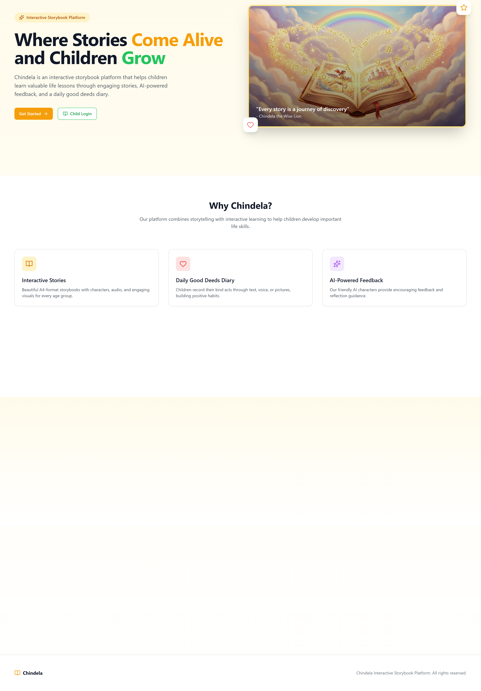
The public landing page, introducing the platform to new visitors
Purpose
The first impression for new visitors — introduces the platform and explains its value in plain language.
How It Works
A visitor arrives at the website and is greeted with a warm, colourful introduction to Chindela, a summary of what makes it valuable, and two clear buttons: one to get started as a parent, and one for children to log in.
Benefits
Builds trust and clarity from the very first moment, and routes each visitor — parent or child — to the correct part of the platform immediately.
Example Usage
A parent hears about Chindela from a friend, visits the website, reads the "Why Chindela?" section, and clicks "Get Started" to create an account.
Public
Parent & Administrator Login
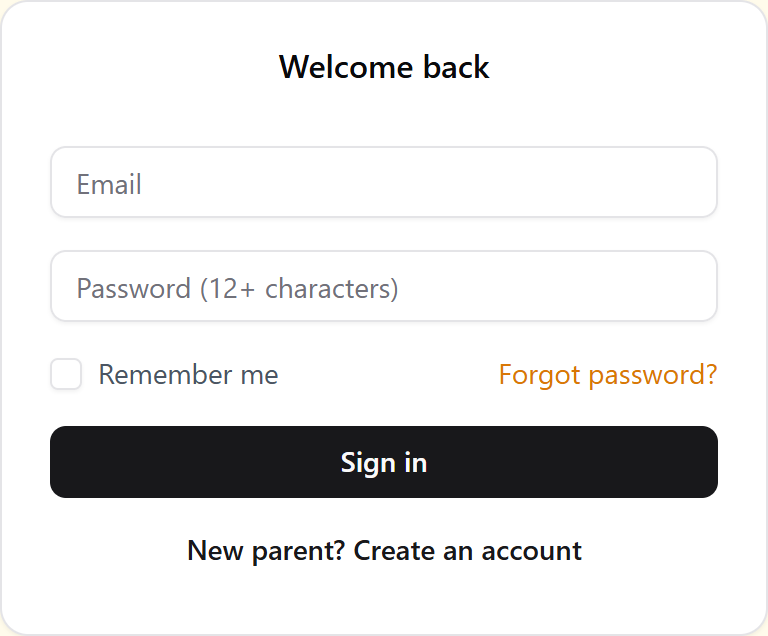
The sign-in and account creation screen
Purpose
A single, simple screen for parents and administrators to sign in, or for new parents to create an account.
How It Works
Visitors enter their email and password to sign in, or switch to "Create an account" to register as a new parent in seconds.
Benefits
One clean, familiar screen reduces confusion and gets people into the platform quickly.
Example Usage
A returning parent enters their email and password and is taken straight to their dashboard.
Child
Child Login
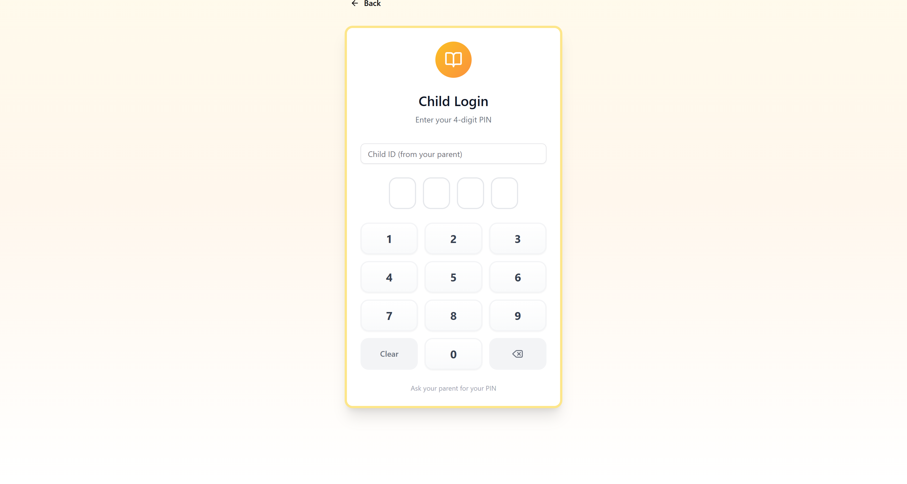
The child-friendly PIN login screen
Purpose
A simplified, playful login built specifically for young children, who cannot be expected to type an email and password.
How It Works
The child enters the short ID number their parent gave them and taps their 4-digit PIN on a large, friendly number pad — no keyboard typing required.
Benefits
Removes every barrier a young child would face with a traditional login, while still keeping each child's account private and secure.
Example Usage
A 6-year-old taps in their ID and PIN independently and is straight into their own reading space in seconds.
Account Recovery & Verification
Public
Forgot Password
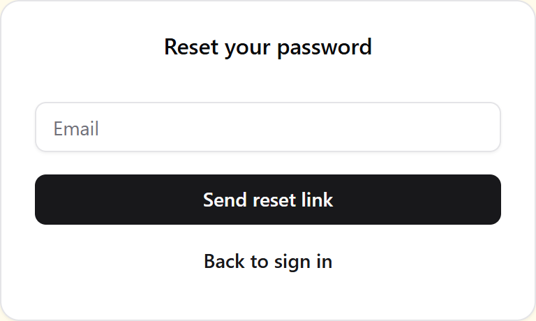
Requesting a password reset link
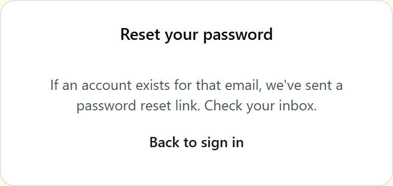
Confirmation that a reset link has been sent
Purpose
Lets a parent regain access to their account if they forget their password, without ever contacting support.
How It Works
The parent enters their email address; the platform emails them a secure, one-time link to reset their password. For privacy, the same confirmation message is shown whether or not that email is registered.
Benefits
A fully self-service recovery flow that follows the same security practices used by major banking and email providers.
Example Usage
A parent who has not logged in for months requests a reset link, receives it by email, and is back into their account within a minute.
Public
Password Reset
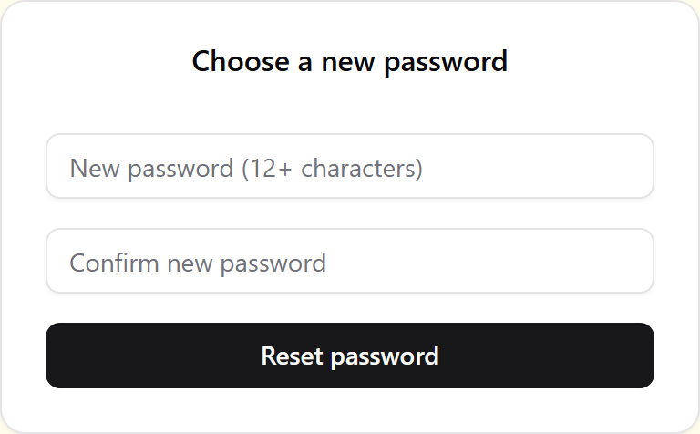
Choosing a new password
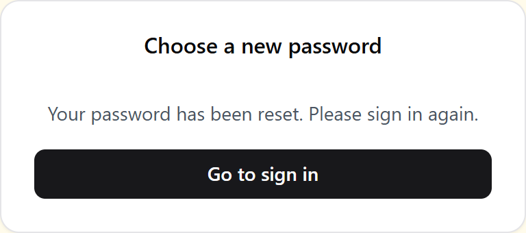
Confirmation that the password has been changed
Purpose
The second half of the recovery flow — where the parent sets a brand-new password.
How It Works
The parent follows the secure link from their email and chooses a new password (12 characters or more). Every device previously signed into that account is automatically signed out for safety.
Benefits
Guarantees that only the person with access to the account's email can ever regain entry, and that an old, possibly compromised session cannot remain active.
Example Usage
After resetting their password, a parent is asked to sign in again on their laptop, confirming the change took effect immediately.
Public
Email Verification
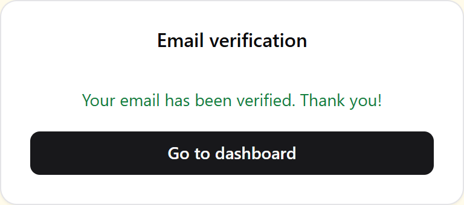
A successfully verified email address
Purpose
Confirms that a parent's email address genuinely belongs to them.
How It Works
After registering, the parent receives a one-time verification link by email. Clicking it instantly confirms their address on the platform.
Benefits
Protects against fake or mistyped email addresses and ensures important account and billing notifications always reach the right inbox.
Example Usage
A newly registered parent clicks the link in their welcome email and sees an instant "verified" confirmation.
The Parent Experience
Parent
Parent Dashboard
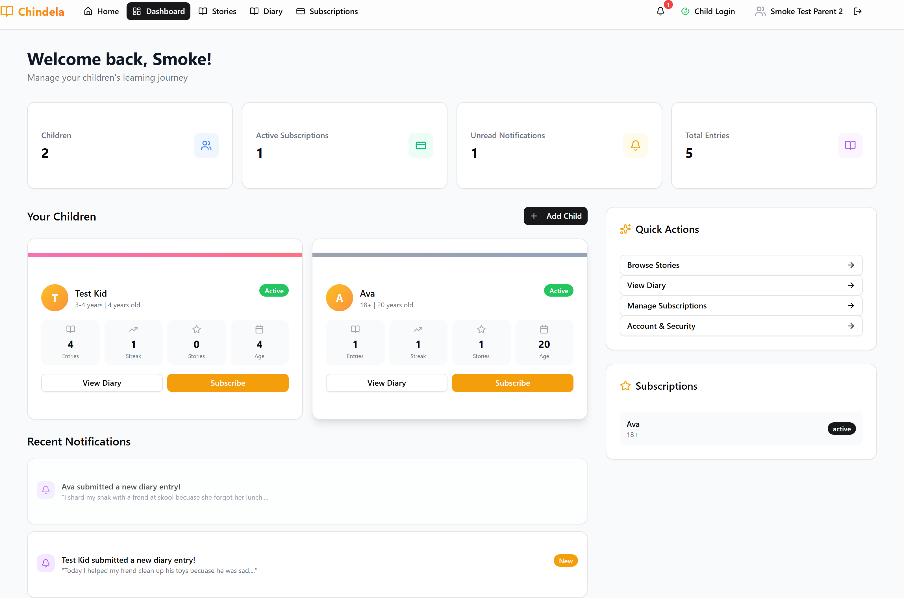
The parent dashboard, showing children, subscriptions and recent activity
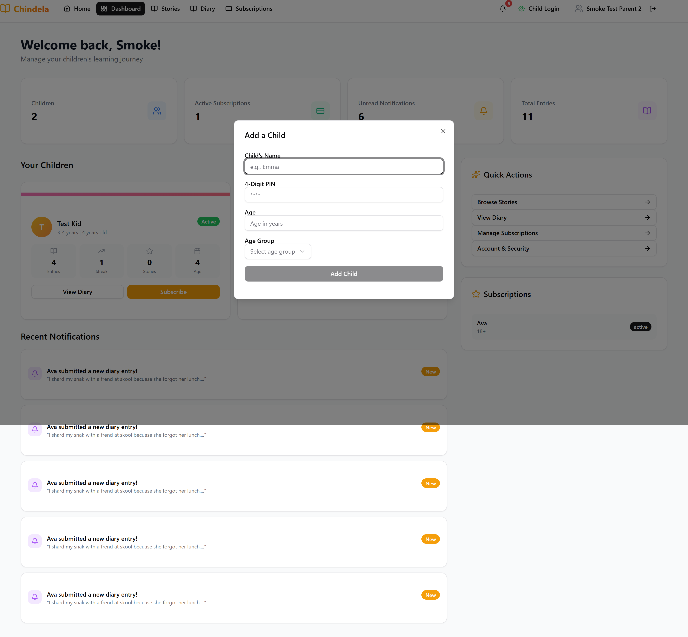
Adding a new child to the family account
The dashboard after a second child has been added
Purpose
The parent's home base — a single screen showing every child, their activity, and quick access to every other part of the platform.
How It Works
At a glance, the parent sees how many children they have, how many active subscriptions, unread notifications, and total diary entries written. Each child appears as its own card with reading streaks and entry counts. A prominent "Add Child" button opens a short form to register a new child with a name, age, age group and a private 4-digit PIN.
Benefits
Everything a parent needs is one click away, with no digging through menus, and adding a new child takes under a minute.
Example Usage
A parent with two children can see at a glance that one child is on a 7-day writing streak, while the other needs a subscription to unlock new stories.
Parent
Story Browser
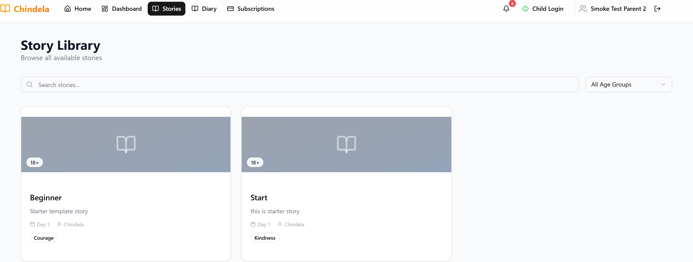
Browsing the library of available storybooks
Purpose
Lets a parent browse every storybook available to their subscribed children.
How It Works
Stories are displayed as colourful cards, each showing its age group, theme, and featured character. Parents can search by title or filter by age group to quickly find the right story.
Benefits
Makes it easy for a parent to preview content before their child reads it, and to find stories matched to each child's age and interests.
Example Usage
A parent filters the library to "5–7 years" to find a story to read together with their daughter before bed.
Parent
Story Reader
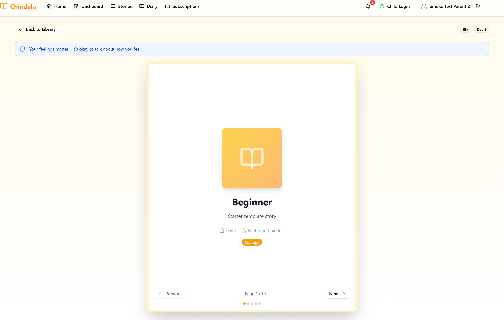
Reading a storybook in the page-by-page reader
Purpose
A beautiful, book-like reading experience for previewing any unlocked story.
How It Works
Each story opens like a real storybook: a cover page, an introduction to its featured character, a series of illustrated lesson pages, and a closing "moral of the story" page — all navigated with simple page-turn controls.
Benefits
Presents every story in an inviting, screen-friendly format that feels like reading a real book rather than browsing a website.
Example Usage
A parent reads through a story before assigning it, confirming the theme and tone are right for their child.
Parent
Diary & AI Feedback Summary
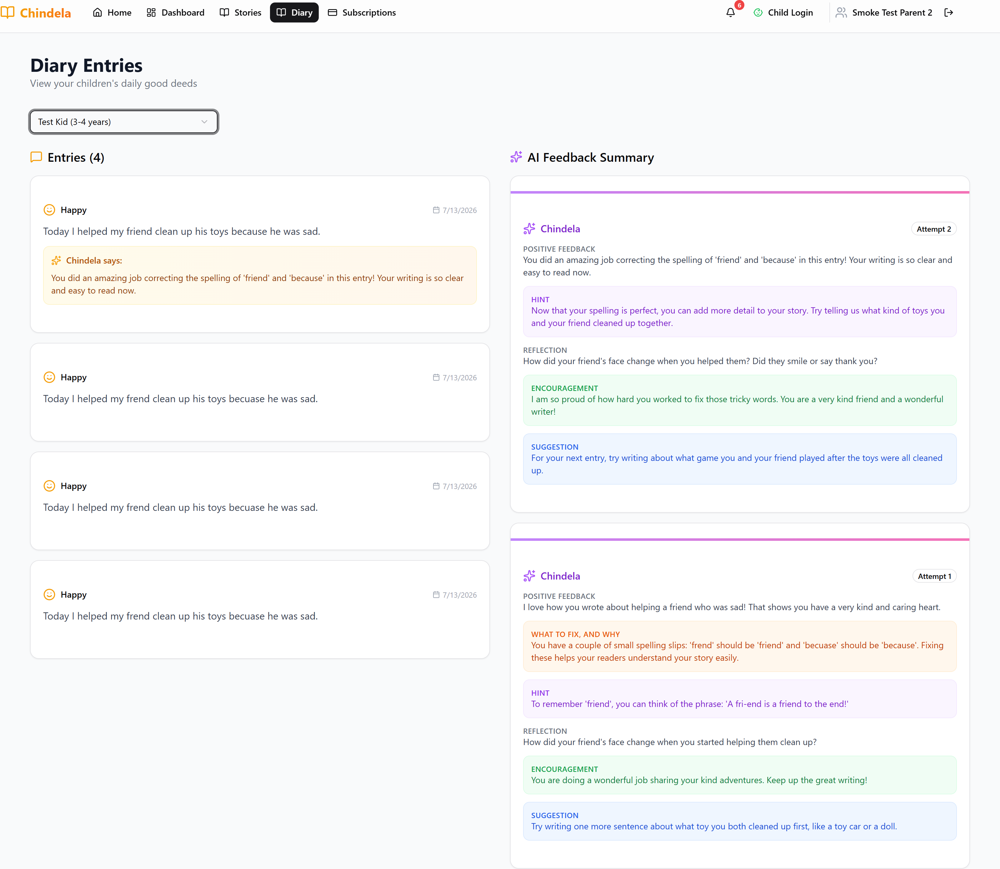
A parent reviewing their child's diary entries and the AI tutor's feedback
Purpose
Full transparency for parents — every word their child writes, and every response the AI tutor gives, in one place.
How It Works
The parent selects a child from a dropdown to see that child's full diary history side-by-side with the AI tutor's feedback for each entry: what it praised, any writing mistakes it gently corrected, a helpful hint, a reflective question, and a note of encouragement.
Benefits
Parents never have to wonder what their child is writing or what the AI is telling them — everything is visible and reviewable at any time, which is central to keeping the experience safe.
Example Usage
A parent notices their child wrote about helping a classmate, reads the AI's kind and encouraging response, and brings it up over dinner that evening.
Parent
Notifications
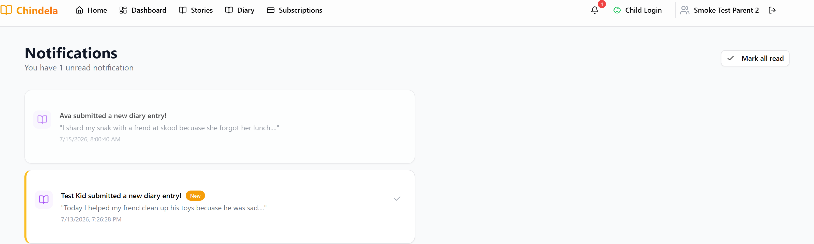
The parent notification centre
Purpose
Keeps parents automatically informed of important activity without needing to check in constantly.
How It Works
The platform raises a notification whenever a child submits a new diary entry, receives AI feedback, or when a subscription is about to expire. A badge on the navigation bar shows how many notifications are unread.
Benefits
Parents stay engaged with their child's activity in real time, and never miss a subscription renewal.
Example Usage
A parent gets a notification the moment their child finishes writing their diary entry for the day.
Parent
Subscriptions
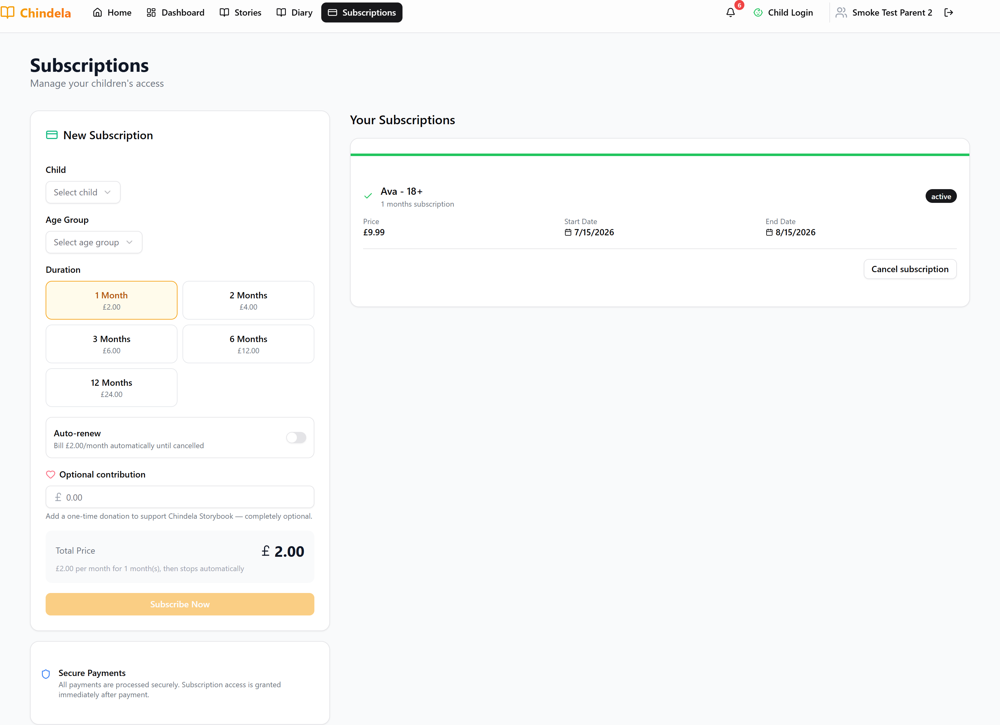
Choosing a subscription plan for a child
Purpose
Where a parent unlocks story content for a child by choosing a subscription plan.
How It Works
The parent selects a child, an age group, and a duration (1, 2, 3, 6 or 12 months), with the total price calculated automatically. An optional one-time contribution can be added to support the platform. Payment is handled securely through Stripe, a world-leading payment processor — see Section 7 for full details.
Benefits
A clear, flexible pricing model with no hidden steps, letting families choose the commitment level that suits them.
Example Usage
A parent subscribes their child to the "5–7 years" content for 3 months, adds a small optional contribution, and their child's stories unlock immediately after payment.
Parent
Account & Security
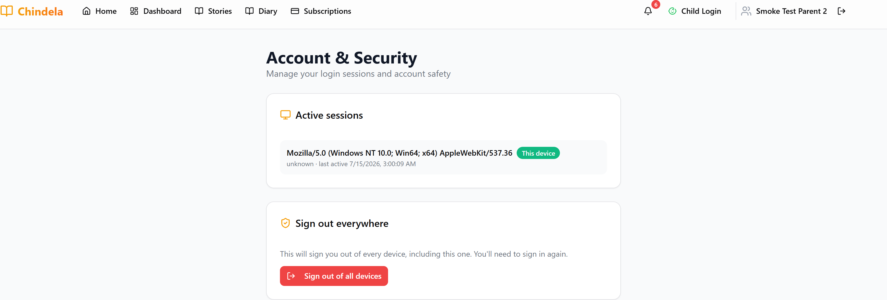
Managing account security settings
Purpose
Gives parents control over their own account's security.
How It Works
From this screen, a parent can review their account details and manage their signed-in sessions and security preferences.
Benefits
Puts account safety directly in the parent's hands, in line with modern data-protection best practice.
Example Usage
A parent who signed in on a shared library computer returns home and reviews their account to make sure it is secure.
The Child Experience
Child
Child Dashboard
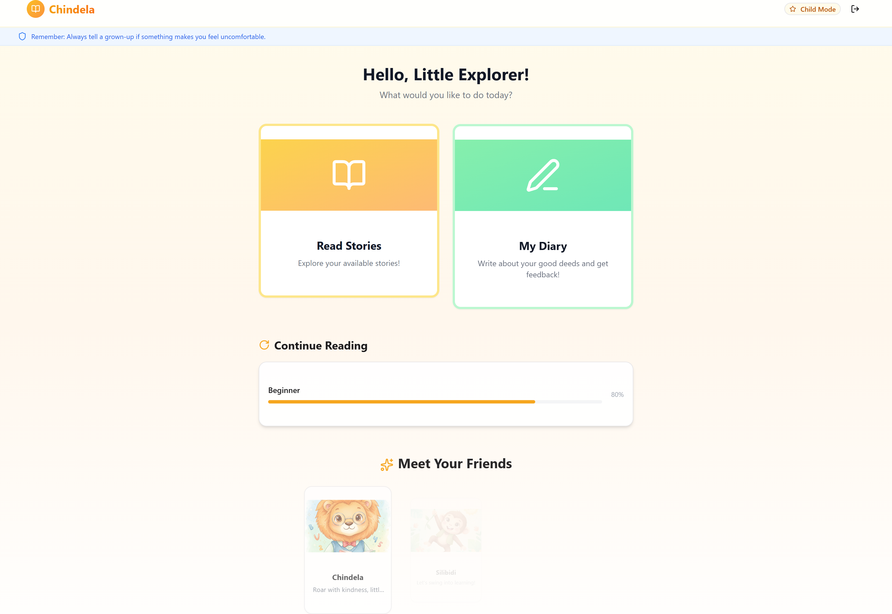
The child's home screen, with stories, diary, and friendly characters
Purpose
A warm, playful home screen designed entirely around a child's point of view.
How It Works
Two large, colourful buttons invite the child to "Read Stories" or open "My Diary." Beneath them, the child can see stories they are partway through, their bookmarked favourites, and a gallery of the friendly characters who guide them through the platform. A gentle safety reminder appears at the top of every screen.
Benefits
Everything is large, visual and simple enough for a young child to use independently, with safety built in from the first screen.
Example Usage
A child logs in after school and immediately sees they are halfway through yesterday's story, with one tap to continue.
Child
Child Story Reader
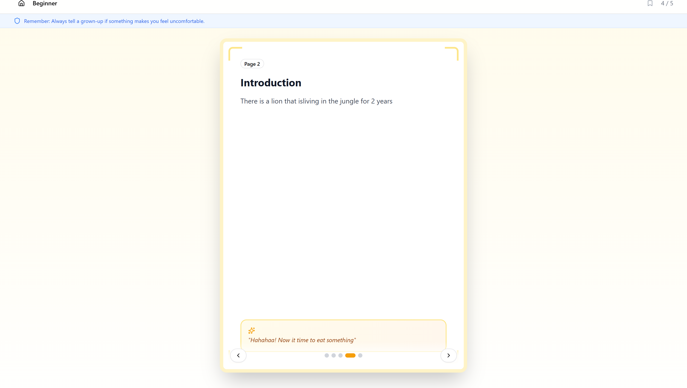
The story cover page in the child reader
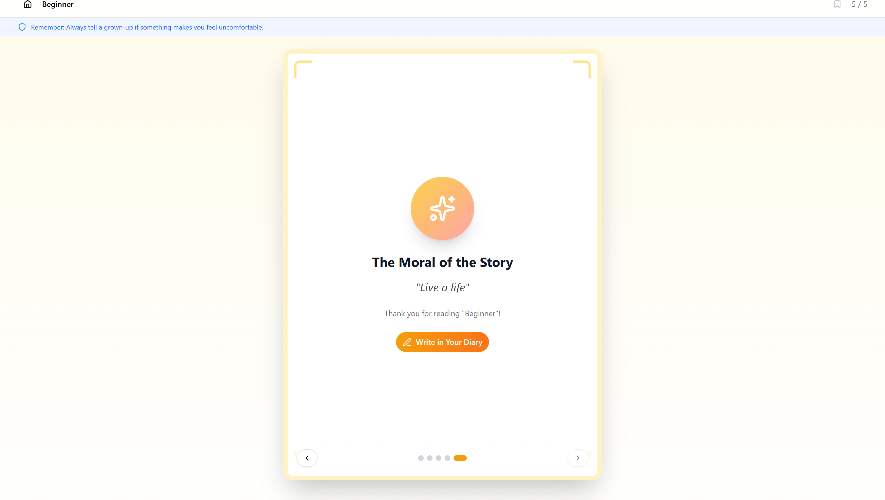
Meeting a story character
Purpose
The same beautiful storybook experience as the parent reader, tailored for the child's own account.
How It Works
The child taps through the story page by page, exactly like turning the pages of a real book. Their reading progress and bookmarks are saved automatically, so they can always pick up where they left off.
Benefits
Encourages independent reading in a format that feels tactile and familiar, while quietly saving progress in the background.
Example Usage
A child reads three pages of a story before dinner, closes the app, and picks up on the very same page the next morning.
Child
Child Diary Submission
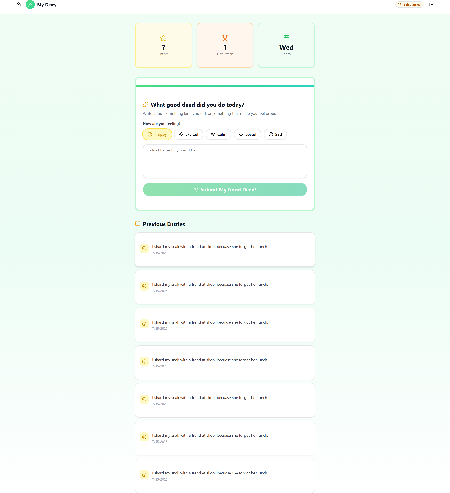
A child writing their daily good-deed diary entry
Purpose
Where a child records a good deed they did that day, in their own words.
How It Works
The child picks how they are feeling from a row of friendly mood icons, then writes a short entry about something kind they did. One tap submits it — and, as described fully in Section 4, the AI tutor responds within moments.
Benefits
Builds a daily habit of reflection and kindness in a format so simple a young child can complete it independently.
Example Usage
A child writes "I shared my snack with a friend who forgot their lunch," picks the "Happy" mood, and submits it before returning to reading.
The Administrator Experience
Admin
Admin Dashboard
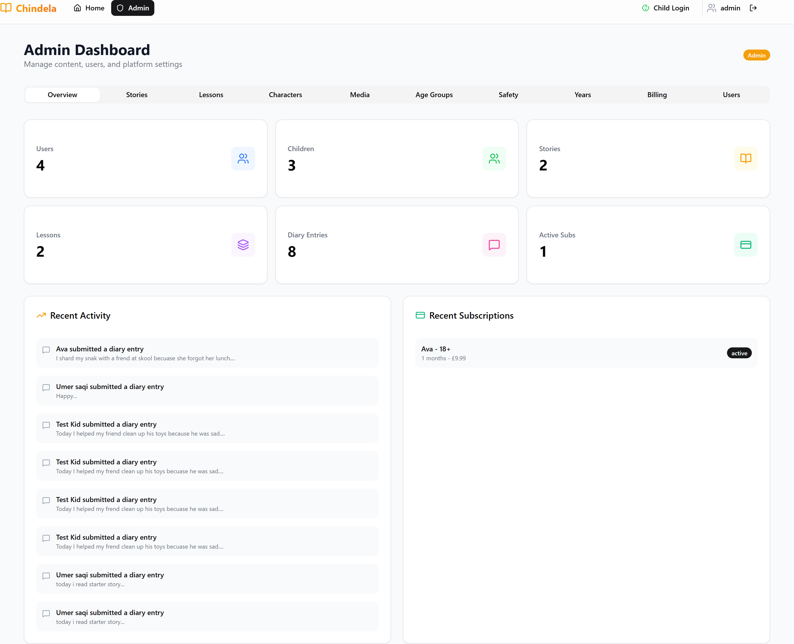
The administrator's home screen, with platform-wide statistics and recent activity
Purpose
A single, real-time control centre giving your team an instant overview of the entire platform.
How It Works
The Overview tab shows live counts of users, children, stories, lessons, diary entries and active subscriptions, alongside a feed of recent family activity and recent subscriptions. Every other management tool — covered in Section 5 — is one click away along the top tab bar.
Benefits
Administrators can see the health and activity of the whole platform at a glance, without navigating through separate reports.
Example Usage
An administrator opens the dashboard each morning to check overnight sign-ups and new diary activity before reviewing the content queue.
Admin
User Management
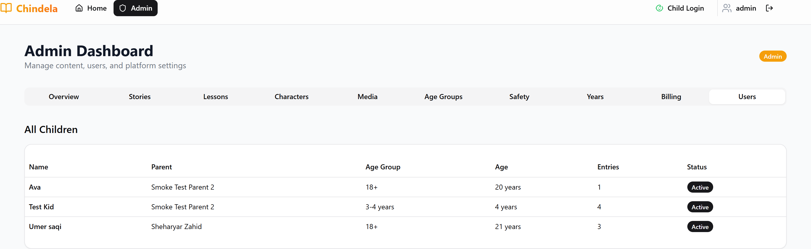
Viewing every registered family and child on the platform
Purpose
Gives administrators full visibility into every family using the platform.
How It Works
Every child account is listed alongside their parent, age group, age, number of diary entries, and active/inactive status, in a single searchable table.
Benefits
Provides your team with the oversight needed for customer support, safeguarding, and general account administration, all from one screen.
Example Usage
An administrator looks up a family who contacted support to confirm which age group their child is subscribed to.
Admin
Billing Overview
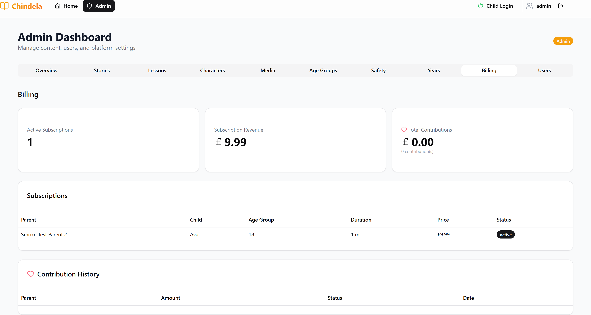
The administrator's view of every subscription on the platform
Purpose
Gives administrators full oversight of subscription and billing activity across every family.
How It Works
Every subscription on the platform is listed with its plan, status and value, giving a live picture of subscription revenue and activity without needing to log into Stripe directly.
Benefits
Keeps billing oversight in the same place as content management, so your team never needs to juggle multiple systems to understand the platform's subscription activity.
Example Usage
An administrator reviews active subscriptions at the end of the month as part of routine reporting.
4
The AI Tutor, Powered by Google Gemini
One of the platform's most distinctive features is its built-in AI tutor. It is powered by Google
Gemini, one of the world's leading artificial intelligence systems — the same underlying technology family
used across Google's own products. In Chindela, it takes on the role of a warm, patient character (shown to
children as "Chindela") who reads what a child writes and responds like a caring, encouraging teacher.
Genuine AI tutor feedback, generated by Google Gemini and reviewed here on the parent's Diary page
How Children Submit Their Work
The platform is built to accept a child's work in several formats:
Text — a child types their diary entry directly, as shown in Section 3.
Image — a photo can be attached to an entry (for example, a picture of a kind act, or of handwritten work).
Audio — a short voice recording can be attached for children who prefer speaking to typing.
How the AI Analyses the Work
Once submitted, the entry (and any attached photo or recording) is securely sent to Google Gemini along with a
set of instructions that shape it into a safe, encouraging tutor for children. Gemini reads the entry the same way
a kind teacher would: understanding what the child did, checking their writing for small mistakes, and considering
how best to respond.
How the AI Explains Mistakes
Rather than simply marking work "right" or "wrong," the AI tutor gently explains any spelling or writing slips
it notices, in plain, friendly language a child can understand — for example, pointing out that "becuase" should be
"because," with a short explanation of why it matters for a reader.
How the AI Teaches
Alongside any correction, the tutor offers a helpful hint or memory trick to help the lesson stick, and a
thoughtful reflection question to encourage the child to think a little deeper about their good deed — for
instance, asking how their friend felt when they helped them.
How the AI Encourages
Every single response includes genuine, specific encouragement. The tutor is designed to always find something
authentic to praise, so that every child — regardless of their writing ability — finishes the interaction feeling
proud and motivated to write again tomorrow.
How the AI Stores Progress
Every diary entry and every AI response is permanently and securely stored against that child's profile. If a
child chooses to revise an entry using the tutor's hint, the platform keeps a full history of every attempt, so
progress and improvement over time is always visible.
How Parents Can Review It
Nothing the AI tutor says to a child is private from their parent. As shown in Section 3, every entry and every
piece of AI feedback appears on the parent's own Diary page, in full, at any time.
5
Admin Content Management System
Everything a child sees on Chindela — every story, lesson, character and safety message — is managed by your
team through the Admin Dashboard, entirely independently, without ever needing to ask a developer to write code or
deploy a change.
✓ Stories
✓ Lessons
✓ Characters
✓ Images, Audio, Video & PDFs
✓ Safety Messages
✓ Age Groups
✓ Content Years
Story Management
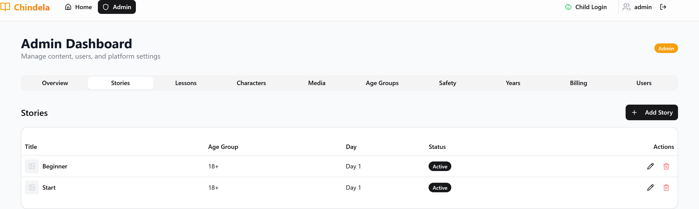
The Story Management screen, listing every story on the platform
Administrators can create, edit, activate/deactivate, or remove stories from a simple table view. Creating a
new story takes only a couple of minutes.
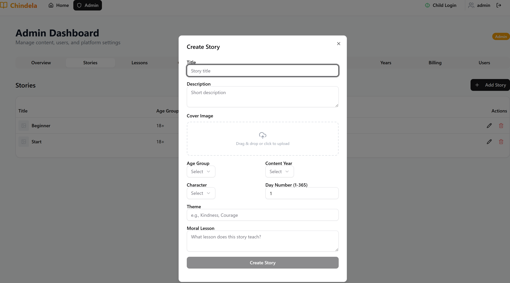
Creating a brand-new story — title, description, cover image, age group and theme, all from one form
Lesson Management
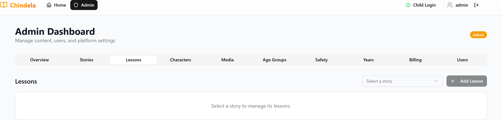
Managing the individual pages (lessons) that make up each story
Each story is made up of a sequence of lesson pages. Administrators can add, reorder, and edit each page's text,
image, audio narration, and character dialogue.
Character Management
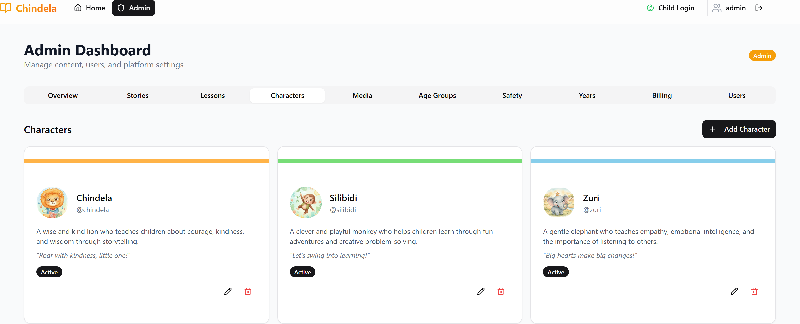
Managing the friendly characters who guide children through the platform
Each character's name, personality, catchphrase, colour theme and portrait image can be fully customised — new
characters can be introduced at any time.
Age Group Management
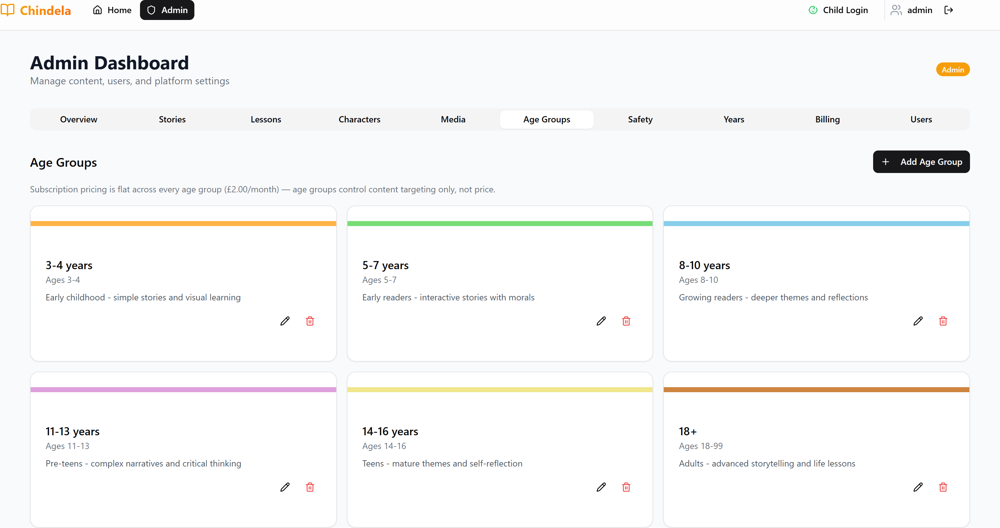
Managing the age bands used to target content
Age groups (such as "3–4 years" or "5–7 years") control which stories and subscriptions are shown to which
children. New age bands can be added as the platform's audience grows.
Safety Header Management
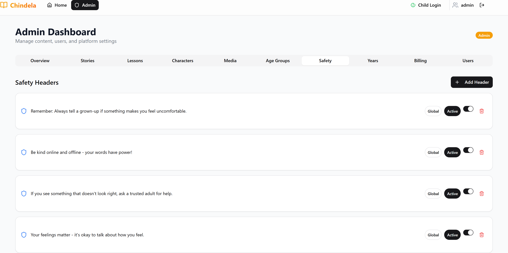
Managing the reassuring safety messages shown to children
The gentle safety reminders shown at the top of every child screen (for example, "Always tell a grown-up if
something makes you feel uncomfortable") are fully editable and can be targeted globally or to a specific age group.
Content Year Management
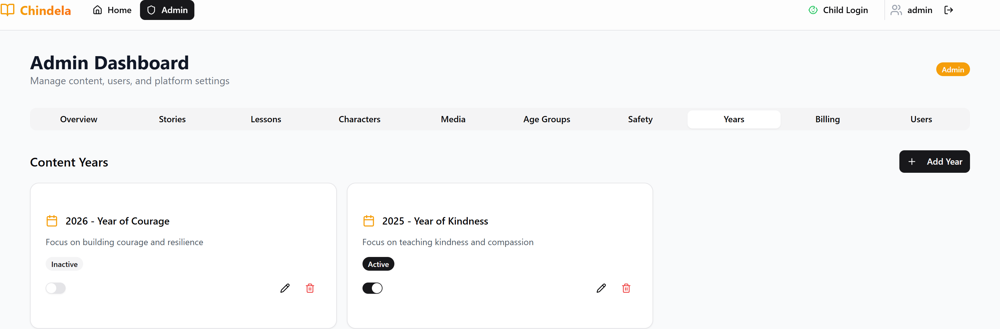
Managing yearly content themes
Chindela organises its content into yearly themes (for example, "2025 — Year of Kindness"). Administrators can
plan and activate a new theme for each coming year, giving the platform a fresh focus annually without any
redevelopment.
Because every one of these screens follows the same simple create / edit / delete pattern shown
above, your team can manage the platform's entire library of educational content independently, for as long as the
platform runs.
6
Media Library
All images, audio, video, PDFs and documents used across the platform are managed from one central Media
Library, available to administrators from every content-editing screen.
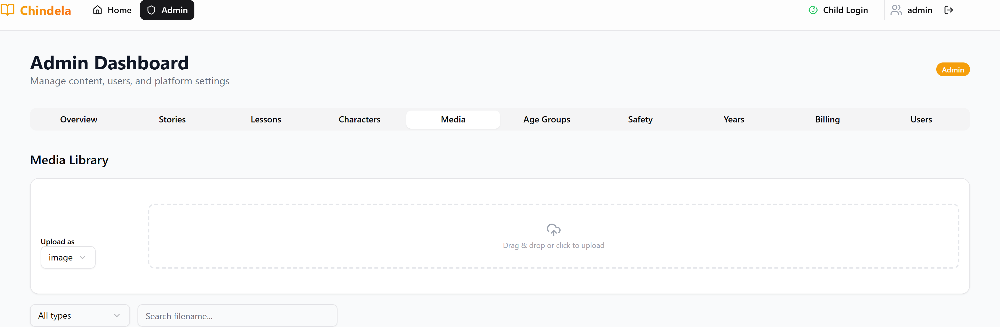
The Media Library, showing uploaded files with filtering and search
Supported File Types
Images, audio recordings, video, PDF documents, and general document files — everything needed for rich, multimedia storybooks.
Upload
Files are uploaded directly from an administrator's computer and are ready to attach to any story or lesson within moments.
Preview
Every file can be previewed directly in the browser before it is used, so administrators can confirm it is correct.
Replace & Delete
Outdated files can be replaced with an updated version or removed entirely, keeping the library tidy over time.
Search & Filtering
Files can be searched by name and filtered by type (image, audio, video, PDF, document), making it fast to find exactly what is needed even as the library grows.
Secure Storage
All uploaded files are stored securely using Amazon Web Services (AWS) cloud storage — the same infrastructure trusted by many of the world's largest websites.
7
Subscriptions & Payments
All payments on Chindela are processed through Stripe, one of the world's most widely trusted
online payment providers, used by millions of businesses globally. Chindela never stores a family's card details
directly — Stripe handles that securely on the platform's behalf.
The subscription plans available to parents
Pricing Plans
1 MonthFlexible, short-term access
2 MonthsA little more value
3 MonthsA popular seasonal choice
6 MonthsBetter value for committed families
12 MonthsThe best value, for a full year of stories
Pricing is consistent across every age group, so families with children of different ages always know what to
expect. Parents may also add an optional one-time contribution at checkout to directly support
the platform, entirely at their discretion.
Test Mode Today, Live Mode at Launch
Stripe is currently connected to the platform in test mode — the safe, standard way every
Stripe-powered platform is built and verified before launch. In test mode, the entire subscription and checkout
journey works exactly as it will for real customers, but no real money changes hands. Before going live, the
platform simply needs to be switched over to your organisation's live Stripe account (see Sections 10 and 11) —
no further development work is required to make this switch.
8
Security & Privacy
Because Chindela is used by children, security has been treated as a foundational requirement throughout the
platform, not an afterthought. Below is a plain-language summary of the protections already built in.
🔐
Secure Login
Every sign-in is protected against automated guessing attempts, and repeated failed attempts are
automatically slowed down to block attackers.
🗝️
Encrypted Passwords
No password is ever stored in readable form. Every password is transformed using strong, one-way
encryption before it touches the database, the same standard used by major banks and technology companies.
🧭
Role Permissions
Administrators, parents and children each see only what they are meant to see. A child, for example, can
never access a parent's billing details or another family's information.
💳
Secure Payments
Card payments are handled entirely by Stripe. Chindela never sees or stores full card numbers, meeting the
same standards used by banks and major retailers.
📁
Protected Uploads
Every uploaded file is checked and stored in secure, access-controlled cloud storage, preventing
unauthorised files or access.
⏱️
Session Management
Parents can review and sign out of any device connected to their account, and a password reset instantly
signs out every other session automatically.
🧒
Safe Child Accounts
Children never handle an email address or password. Their simplified PIN login, combined with parental
oversight of every diary entry and AI response, keeps their experience contained and supervised at all times.
Together, these protections mean that families' personal information, children's activity, and
every payment are handled with the same level of care as leading consumer platforms.
9
Future Expansion
Chindela has been deliberately engineered so that its content library can grow without limit and without any
future redevelopment cost. The platform places no ceiling on:
∞ Unlimited Stories
∞ Unlimited Lessons
∞ Unlimited Images
∞ Unlimited Videos
∞ Unlimited Audio Files
∞ Unlimited PDFs
∞ Unlimited Educational Resources
∞ Unlimited Age Group Content
Every one of these is added through the same simple admin screens shown in Section 5. This means your
organisation's content team can expand Chindela's library for years to come — new stories every month, entirely
new age groups, additional languages, or new yearly themes — using the tools already built into the platform
today, with no additional engineering investment required simply to add more content.
10
Infrastructure Required Before Launch
The platform itself is complete. Before it can go live for real families, a small number of external service
accounts need to be set up under MJ CIC's own name — this is standard for any modern web platform and keeps your
organisation in full ownership and control of its own data, domain and finances.
Service
What It's For
Stripe
Processing real subscription and contribution payments from families.
Amazon Web Services (AWS S3)
Secure cloud storage for every story image, audio file, video and document.
Hosting
The live server environment where the website will run around the clock.
Production Database
The permanent, secure store for every family, child, story and diary entry once live.
Resend
Delivers account emails to parents — welcome messages, password resets, and receipts.
Domain
Your organisation's own web address (for example, www.chindela.org), so families can find you.
Setting up each of these accounts typically takes a matter of minutes; guidance for each is provided in Section 12.
11
Current Development Status
The Chindela platform is feature-complete. Every screen described in this guide is already
built, working, and has been demonstrated with real, live screenshots throughout this document.
Completed
✔ Authentication
✔ Parent Portal
✔ Child Portal
✔ Admin CMS
✔ Story Reader
✔ AI Tutor
✔ Stripe Integration
✔ Media Library
✔ Notifications
✔ Email System
✔ Security
✔ AWS Storage
✔ Account Management
✔ Subscription System
✔ Contributions
✔ Progress Tracking
✔ Responsive Design
Remaining Before Production Launch
• Final deployment
• Live infrastructure configuration
• End-to-end production testing
• Stripe Live activation
It's important to note what these remaining items are not: they are not missing
features or unfinished screens. Every item above is a deployment task — connecting the
already-built platform to your organisation's own live accounts (Section 10) and switching it on for the public.
The product itself is done.
12
Next Steps
To take Chindela from its current, fully-built state to a live public platform, the following steps are needed:
Create the service accounts listed in Section 10 — Stripe, AWS, hosting, and Resend — under MJ CIC's own name.
Provide the resulting credentials for each service to your development team.
The developer completes deployment, connecting the platform to your live accounts and production database.
The developer performs end-to-end testing against the live environment, including a full real payment test through Stripe.
Go live — the platform is switched on for real families to register and subscribe.
We are ready to move to launch as soon as MJ CIC is ready to provide the accounts listed above.